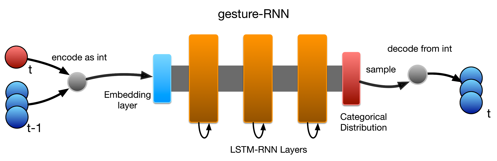
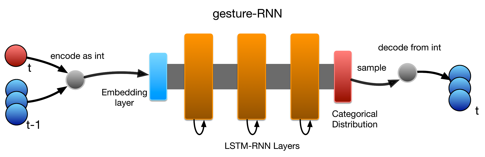

Propagates error correction backwards through the network graph, adjusting all parameters (U, V, W) to minimise loss.
Example: Character-level text model
Training data: a collection of text.
Input (X): snippets of 30 characters from the collection.
Target output (y): 1 character, the next one after the 30 in each X.
Training the Character-level Model
Target: A probability distribution with \(P(n) = 1\)
Output: A probability distribution over all next letters.
E.g.: “My cat is named Simon” would lead to X: “My cat is named Simo” and y: “n”
Using the trained model to generate text
S: Sampling function, sample a letter using the output probability distribution.
The generated letter is reinserted at as the next input.
We don’t want to always draw the most likely character. The would give frequent repetition and “copying” from the training text. Need a sampling strategy.
Char-RNN
RNN as a sequence generator
Input is current symbol, output is next predicted symbol.
Connect output to input and continue!
CharRNN simply applies this to a (subset) of ASCII characters.
Second Senator: They are away this miseries, produced upon my soul, Breaking and strongly should be buried, when I perish The earth and thoughts of many states.
DUKE VINCENTIO: Well, your wit is in the care of side and that.
Latex Algebraic Geometry:
N.B. “Proof. Omitted.” Lol.
RNN Architectures and LSTM
Bidirectional RNNs
Useful for tasks where the whole sequence is available.
Each output unit (\(\hat{y}\)) depends on both past and future - but most sensitive to closer times.
Popular in speech recognition, translation etc.
Encoder-Decoder (seq-to-seq)
Learns to generate output sequence (y) from an input sequence (x).
Final hidden state of encoder is used to compute a context variable C.
For example, translation.
Deep RNNs
Does adding deeper layers to an RNN make it work better?
Several options for architecture.
Simply stacking RNN layers is very popular; shown to work better by Graves et al. (2013)
Intuitively: layers might learn some hierarchical knowledge automatically.
Typical setup: up to three recurrent layers.
Long-Term Dependencies
Learning long dependencies is a mathematical challenge.
Basically: gradients propagated through the same weights tend to vanish (mostly) or explode (rarely)
E.g., consider a simplified RNN with no nonlinear activation function or input.
Each time step multiplies h(0) by W.
This corresponds to raising power of eigenvalues in \(\Lambda\).
Eventually, components of h(0) not aligned with the largest eigenvector will be discarded.
“in order to store memories in a way that is robust to small perturbations, the RNN must enter a region of parameter space where gradients vanish”
“whenever the model is able to represent long term dependencies, the gradient of a long term interaction has exponentially smaller magnitude than the gradient of a short term interaction.”
Note that this problem is only relevant for recurrent networks since the weights W affecting the hidden state are the same at each time step.
Goodfellow and Benigo (2016): “the problem of learning long-term dependencies remains one of the main challenges in deep learning”
Recurrent Neural Networks let us capture and model the structure of sequential data.
Sampling from trained RNNs allow us to generate new, creative sequences.
The internal state of RNNs make them interesting for interactive applications, since it lets them capture and continue from the current context or “style”.
LSTM units are able to overcome the vanishing gradient problem to some extent.


 


{kind=link}